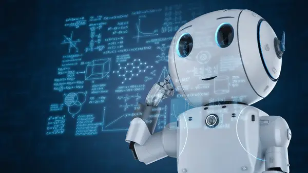
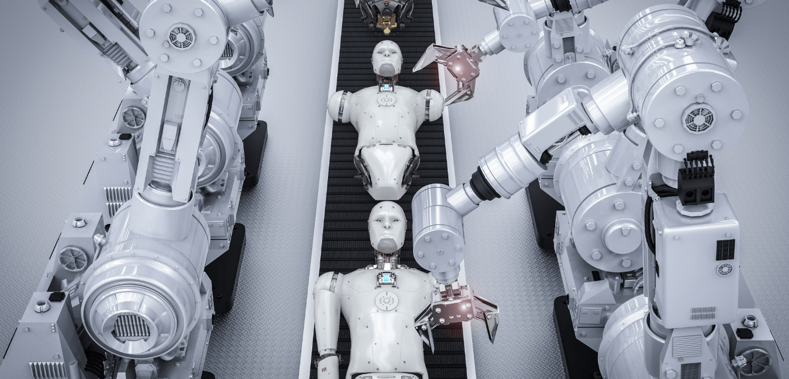
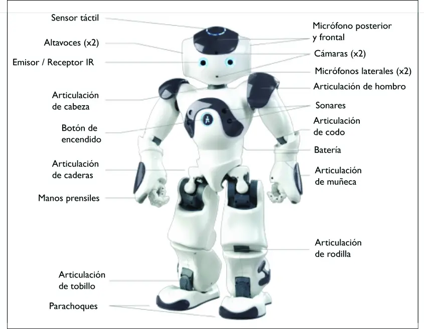
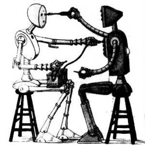

Introducción a la Robótica
Introducción a la Robótica

Definición de Robótica
La robótica se enfoca en el diseño, construcción, programación y operación de robots, abarcando desde máquinas industriales hasta humanoides y móviles. El término 'robot' fue introducido por Karel Čapek en la década de 1920 en su obra 'R.U.R.'
Breve Historia de la Robótica
A lo largo de la historia han existido mitos de autómatas y seres artificiales. En el siglo XX surgieron los primeros robots industriales y brazos robóticos programables, marcando el inicio de una nueva era en la tecnología.
Importancia y Aplicaciones de la Robótica en la Actualidad
Importancia de la Robótica
La robótica mejora la eficiencia y precisión en la industria, contribuyendo al avance científico y tecnológico. Además, resuelve problemas complejos en campos como la medicina y la exploración espacial.
Aplicaciones Actuales de la Robótica

- Robótica industrial en fábricas
- Robótica médica en cirugías asistidas y diagnósticos médicos
- Robótica de servicio en hoteles y restaurantes
Componentes de un Robot

- Actuadores: Son los componentes responsables de ejecutar las acciones físicas de los robots, como el movimiento y la manipulación de objetos. Pueden ser motores, pistones neumáticos o sistemas electromagnéticos.
- Controladores: Son el cerebro de un robot, encargados de gestionar y coordinar las acciones de los sensores y actuadores. Utilizan algoritmos y lógica de control para garantizar un comportamiento preciso y eficiente.
- Software: Incluye la programación y algoritmos que guían su comportamiento y toma de decisiones. Los programadores utilizan lenguajes específicos para diseñar las funciones y capacidades del robot.
Tecnologías Emergentes en Robótica
- Inteligencia Artificial y Aprendizaje Automático: Permiten a los robots mejorar su toma de decisiones, adaptarse a nuevos entornos y aprender de la interacción con humanos y otros robots.
- Robótica Colaborativa (Cobots): Son diseñados para trabajar de forma segura y eficiente en colaboración con humanos, facilitando tareas repetitivas o peligrosas en entornos compartidos.
- Nanorrobótica: Se refiere a la fabricación e implementación de robots a escala nanométrica que pueden realizar tareas precisas a nivel molecular. Estos diminutos robots tienen aplicaciones en medicina, investigación y tecnología.
- Robótica Autónoma: Implica robots capaces de tomar decisiones y realizar tareas sin intervención humana, adaptándose a entornos cambiantes y complejos. Estos robots autónomos se utilizan en exploración espacial, transporte autónomo y aplicaciones industriales avanzadas.
Impacto de la Robótica en la Sociedad

Beneficios de la Robótica
La robótica aporta eficiencia, precisión y seguridad en diversas industrias, mejorando la calidad de vida y potenciando el progreso tecnológico. Por ejemplo, los robots quirúrgicos permiten procedimientos más precisos y menos invasivos en la medicina.
Desafíos de la Robótica
El crecimiento de la robótica plantea desafíos como la pérdida de empleos en sectores automatizados, cuestiones éticas sobre la intervención de robots en la sociedad y preocupaciones de seguridad cibernética en sistemas automatizados.